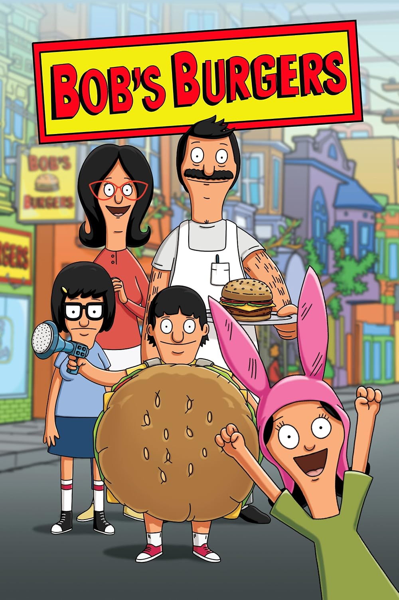

Welcome to my website about Bob's Burgers!
Created by: Milena Budny
My favorite TV show is Bob's Burgers. It is a cartoon series about a family who runs a burger restaurant above which they live, facing quirks and choas.
I enjoy the animated series, the characters, and the exciting adventures. The show is interesting and funny!

| Category | Information | Details |
|---|---|---|
| Main Character | Bob Belcher | Owns a burger restaurant |
| Setting | Seaside town | The family runs a burger restaurant |
| Genre | Animated comedy | Family and restaurant adventures |